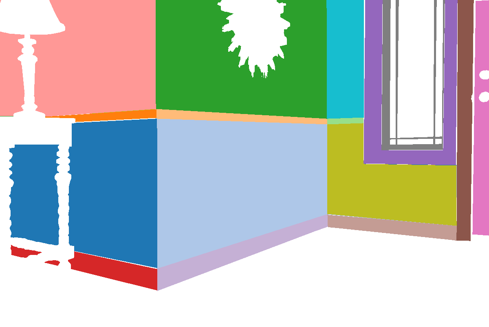
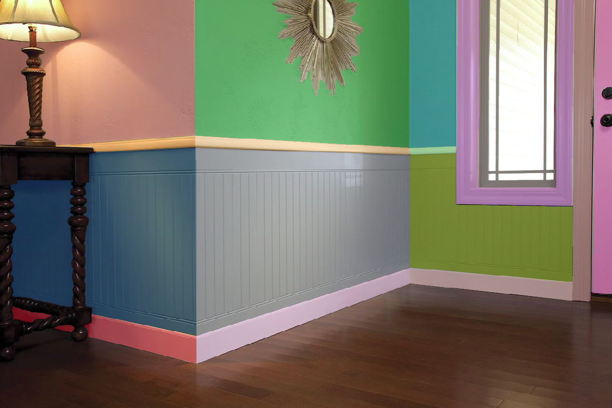
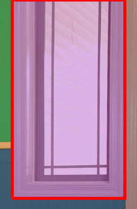
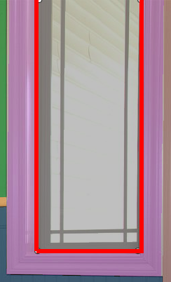

The objects of interest that appear in the image and their corresponding instances are as follows:
- Wall
- Wall 1
- Wall 2
- Wall 3
- Wall 4
- Wall 5
- Wall 6
- Chair Rail
- Chair Rail 1
- Chair Rail 2
- Chair Rail 3
- Baseboard
- Baseboard 1
- Baseboard 2
- Baseboard 3
- Casing
- Casing 1
- Casing 2
- Door
- Door 1
- Window
- Window 1
The input image and segmented output are described in Figure 1.


Figure 1: Basics of good vs. bad object segmentation. Left: Input indoor image. Center: Segmented image. Right: Segmented regions overlaid over the input image.
Important Notes:
- The segmentation results should not be affected by changes in illumination, shadowing, or object texture.
- Notice how walls separated by corners are labeled as different instances in Figure 1. Do not group them as a single instance.
- Be as accurate as possible when segmenting objects. Figure 2 (left) shows an example of bad segmentation: The table leg details are not preserved. Do not do this, use the polygon tool to obtain a good approximation of the object edge.
- Similarly, be as accurate as possible when segmenting windows casing and pane.
Do not include the actual window as part of the paintable objects.
Figure 2 (center and right) shows two examples of bad segmentation.
The center subfigure shows a bad segmentation in which the whole window (including its casing and non-paintable parts such as glasses)
is included as a paintable object, and the right subfigure shows a bad segmentation where the glasses is included.
The best solution is depicted in Figure 1 (center) where only the paintable part is labeled.


Figure 2: Examples of bad object segmentation. Left: Inaccurate segmentation of objects, edges not preserved. Center, Right: Inclusion of non-paintable objects.